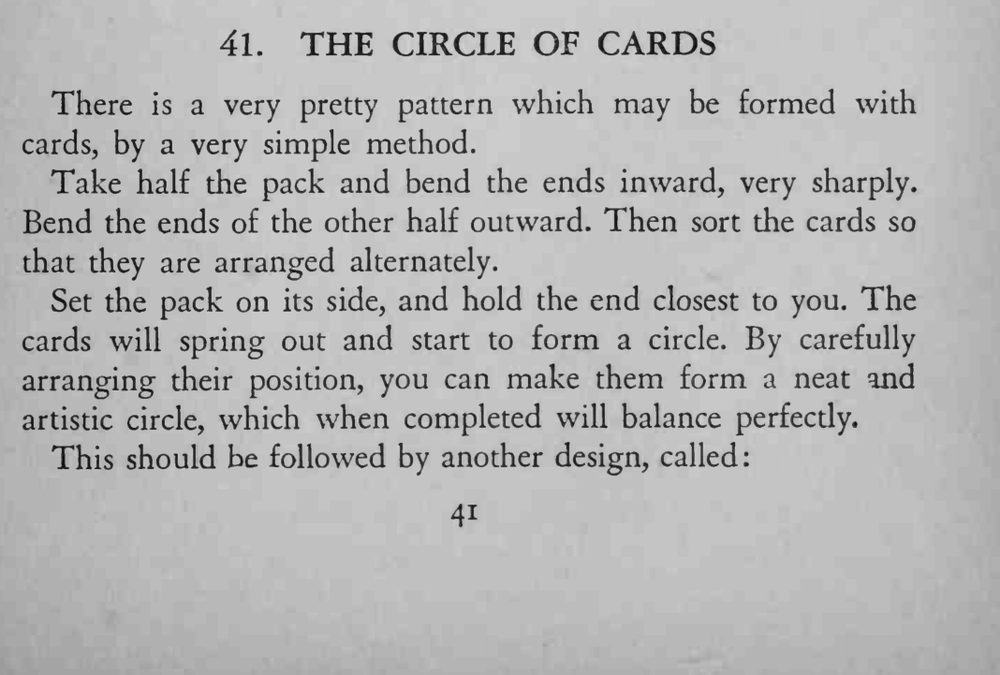

半副牌被压弯后，在桌上立起来，不收手也不倒，还慢慢围成一个圆环。
弯牌要弯得均匀，牌才能一张扣一张立成圆。

There is a very pretty pattern which may be formed with cards, by a very simple method. Take half the pack and bend the ends inward, very sharply. Bend the ends of the other half outward. Then sort the cards so that they are arranged alternately. Set the pack on its side, and hold the end closest to you. The cards will spring out and start to form a circle. By carefully arranging their position, you can make them form a neat and artistic circle, which when completed will balance perfecdy. This should be followed by another design, called: